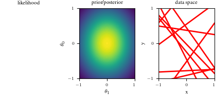

# Bayesian inference for simple linear regression with known noise variance
# The goal is to reproduce fig 3.7 from Bishop's book.
# We fit the linear model f(x,w) = w0 + w1*x and plot the posterior over w.
import numpy as np
import matplotlib.pyplot as plt
import os
# try:
# import probml_utils as pml
# except ModuleNotFoundError:
# %pip install -qq git+https://github.com/probml/probml-utils.git
# import probml_utils as pml
from scipy.stats import uniform, norm, multivariate_normal
from tueplots import bundles
plt.rcParams.update(bundles.icml2022())Bayesian Linear Regression Posterior Figures
plt.rcParams.update({'figure.figsize': (4.5, 2.0086104634371584)})np.random.seed(0)
# Number of samples to draw from posterior distribution of parameters.
NSamples = 10
# Each of these corresponds to a row in the graphic and an amount of data the posterior will reflect.
# First one must be zero, for the prior.
DataIndices = [0, 1, 2, 5, 10, 20, 100]
# True regression parameters that we wish to recover. Do not set these outside the range of [-1,1]
a0 = -0.3
a1 = 0.5
NPoints = 100 # Number of (x,y) training points
noiseSD = 0.2 # True noise standard deviation
priorPrecision = 2.0 # Fix the prior precision, alpha. We will use a zero-mean isotropic Gaussian.
likelihoodSD = noiseSD # Assume the likelihood precision, beta, is known.
likelihoodPrecision = 1.0 / (likelihoodSD**2)
# Because of how axises are set up, x and y values should be in the same range as the coefficients.
x = 2 * uniform().rvs(NPoints) - 1
y = a0 + a1 * x + norm(0, noiseSD).rvs(NPoints)
def MeanCovPost(x, y):
# Given data vectors x and y, this returns the posterior mean and covariance.
X = np.array([[1, x1] for x1 in x])
Precision = np.diag([priorPrecision] * 2) + likelihoodPrecision * X.T.dot(X)
Cov = np.linalg.inv(Precision)
Mean = likelihoodPrecision * Cov.dot(X.T.dot(y))
return {"Mean": Mean, "Cov": Cov}
def GaussPdfMaker(mean, cov):
# For a given (mean, cov) pair, this returns a vectorized pdf function.
def out(w1, w2):
return multivariate_normal.pdf([w1, w2], mean=mean, cov=cov)
return np.vectorize(out)
def LikeFMaker(x0, y0):
# For a given (x,y) pair, this returns a vectorized likelhood function.
def out(w1, w2):
err = y0 - (w1 + w2 * x0)
return norm.pdf(err, loc=0, scale=likelihoodSD)
return np.vectorize(out)
# Grid space for which values will be determined, which is shared between the coefficient space and data space.
grid = np.linspace(-1, 1, 50)
Xg = np.array([[1, g] for g in grid])
G1, G2 = np.meshgrid(grid, grid)
# If we have many samples of lines, we make them a bit transparent.
alph = 5.0 / NSamples if NSamples > 50 else 1.0
# A function to make some common adjustments to our subplots.
def adjustgraph(whitemark):
if whitemark:
plt.ylabel(r"$\theta_0$")
plt.xlabel(r"$\theta_1$")
# plt.scatter(a0, a1, marker="+", color="white", s=100)
else:
plt.ylabel("y")
plt.xlabel("x")
plt.ylim([-1, 1])
plt.xlim([-1, 1])
plt.xticks([-1, 0, 1])
plt.yticks([-1, 0, 1])
return None
def create_figure(data_index):
fig = plt.figure()
# Left graph
if(data_index==0):
ax1 = fig.add_subplot(1, 3, 1)
ax1.set_title("likelihood")
ax1.axis("off")
else:
ax1 = fig.add_subplot(1, 3, 1)
likfunc = LikeFMaker(x[di - 1], y[di - 1])
ax1.contourf(G1, G2, likfunc(G1, G2), 100)
adjustgraph(True)
ax1.set_title("likelihood")
# ax1.axis("off")
# Middle graph
ax2 = fig.add_subplot(1, 3, 2)
postfunc = GaussPdfMaker(postM, postCov)
ax2.contourf(G1, G2, postfunc(G1, G2), 100)
adjustgraph(True)
ax2.set_title("prior/posterior")
# Right graph
ax3 = fig.add_subplot(1, 3, 3)
Samples = multivariate_normal(postM, postCov).rvs(NSamples)
Lines = Xg.dot(Samples.T)
if data_index != 0:
ax3.scatter(x[:data_index], y[:data_index], s=140, facecolors="none", edgecolors="b")
for j in range(Lines.shape[1]):
ax3.plot(grid, Lines[:, j], linewidth=2, color="r", alpha=alph)
adjustgraph(False)
ax3.set_title('data space')
return fig
# Loop through DataIndices to create separate figures for each row
for di in DataIndices:
if di == 0:
postM = [0, 0]
postCov = np.diag([1.0 / priorPrecision] * 2)
else:
Post = MeanCovPost(x[:di], y[:di])
postM = Post["Mean"]
postCov = Post["Cov"]
fig = create_figure(di)
plt.tight_layout()
plt.savefig(f"blr_{di}.png", dpi=900)
plt.show()
import numpy as np
import matplotlib.pyplot as plt
from scipy.stats import norm, multivariate_normal
np.random.seed(0)
NSamples = 10
DataIndices = [0, 1, 2, 5, 10, 20, 100]
a0 = -0.3
a1 = 0.5
NPoints = 100
noiseSD = 0.2
priorPrecision = 2.0
likelihoodSD = noiseSD
likelihoodPrecision = 1.0 / (likelihoodSD**2)
x = 2 * np.random.random(NPoints) - 1
y = a0 + a1 * x + np.random.normal(0, noiseSD, NPoints)
def MeanCovPost(x, y):
X = np.array([[1, x1] for x1 in x])
Precision = np.diag([priorPrecision] * 2) + likelihoodPrecision * X.T.dot(X)
Cov = np.linalg.inv(Precision)
Mean = likelihoodPrecision * Cov.dot(X.T.dot(y))
return {"Mean": Mean, "Cov": Cov}
def GaussPdfMaker(mean, cov):
def out(w1, w2):
return multivariate_normal.pdf([w1, w2], mean=mean, cov=cov)
return np.vectorize(out)
def LikeFMaker(x0, y0):
def out(w1, w2):
err = y0 - (w1 + w2 * x0)
return norm.pdf(err, loc=0, scale=likelihoodSD)
return np.vectorize(out)
grid = np.linspace(-1, 1, 50)
Xg = np.array([[1, g] for g in grid])
G1, G2 = np.meshgrid(grid, grid)
alph = 5.0 / NSamples if NSamples > 50 else 1.0
def adjustgraph(whitemark):
if whitemark:
plt.ylabel(r"$\theta_0$")
plt.xlabel(r"$\theta_1$")
else:
plt.ylabel("y")
plt.xlabel("x")
plt.ylim([-1, 1])
plt.xlim([-1, 1])
plt.xticks([-1, 0, 1])
plt.yticks([-1, 0, 1])
return None
def create_figure(data_index):
fig = plt.figure(figsize=(15, 5))
ax1 = fig.add_subplot(1, 3, 1)
if data_index == 0:
ax1.set_title("likelihood")
ax1.axis("off")
else:
likfunc = LikeFMaker(x[di - 1], y[di - 1])
ax1.contourf(G1, G2, likfunc(G1, G2), 100)
adjustgraph(True)
ax1.set_title("likelihood")
ax2 = fig.add_subplot(1, 3, 2)
postfunc = GaussPdfMaker(postM, postCov)
ax2.contourf(G1, G2, postfunc(G1, G2), 100)
adjustgraph(True)
ax2.set_title("prior/posterior")
ax3 = fig.add_subplot(1, 3, 3)
Samples = multivariate_normal(postM, postCov).rvs(NSamples)
Lines = Xg.dot(Samples.T)
if data_index != 0:
ax3.scatter(x[:data_index], y[:data_index], s=140, facecolors="none", edgecolors="b")
for j in range(Lines.shape[1]):
ax3.plot(grid, Lines[:, j], linewidth=2, color="r", alpha=alph)
adjustgraph(False)
ax3.set_title('data space')
plt.tight_layout()
return fig
for di in DataIndices:
if di == 0:
postM = [0, 0]
postCov = np.diag([1.0 / priorPrecision] * 2)
else:
Post = MeanCovPost(x[:di], y[:di])
postM = Post["Mean"]
postCov = Post["Cov"]
fig = create_figure(di)
#plt.savefig(f"blr_{di}.png", dpi=300)
plt.show()/tmp/ipykernel_3006897/2174210570.py:86: UserWarning: This figure was using constrained_layout, but that is incompatible with subplots_adjust and/or tight_layout; disabling constrained_layout.
plt.tight_layout()
/tmp/ipykernel_3006897/2174210570.py:86: UserWarning: This figure was using constrained_layout, but that is incompatible with subplots_adjust and/or tight_layout; disabling constrained_layout.
plt.tight_layout()
/tmp/ipykernel_3006897/2174210570.py:86: UserWarning: This figure was using constrained_layout, but that is incompatible with subplots_adjust and/or tight_layout; disabling constrained_layout.
plt.tight_layout()
/tmp/ipykernel_3006897/2174210570.py:86: UserWarning: This figure was using constrained_layout, but that is incompatible with subplots_adjust and/or tight_layout; disabling constrained_layout.
plt.tight_layout()
/tmp/ipykernel_3006897/2174210570.py:86: UserWarning: This figure was using constrained_layout, but that is incompatible with subplots_adjust and/or tight_layout; disabling constrained_layout.
plt.tight_layout()
/tmp/ipykernel_3006897/2174210570.py:86: UserWarning: This figure was using constrained_layout, but that is incompatible with subplots_adjust and/or tight_layout; disabling constrained_layout.
plt.tight_layout()
/tmp/ipykernel_3006897/2174210570.py:86: UserWarning: This figure was using constrained_layout, but that is incompatible with subplots_adjust and/or tight_layout; disabling constrained_layout.
plt.tight_layout()